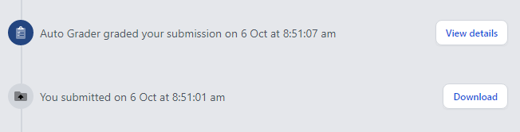
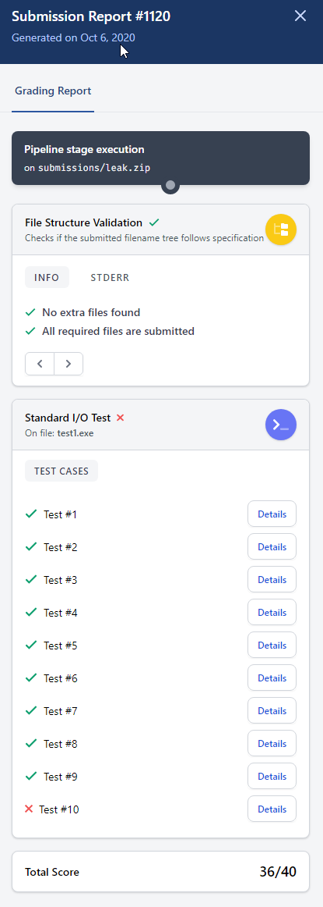
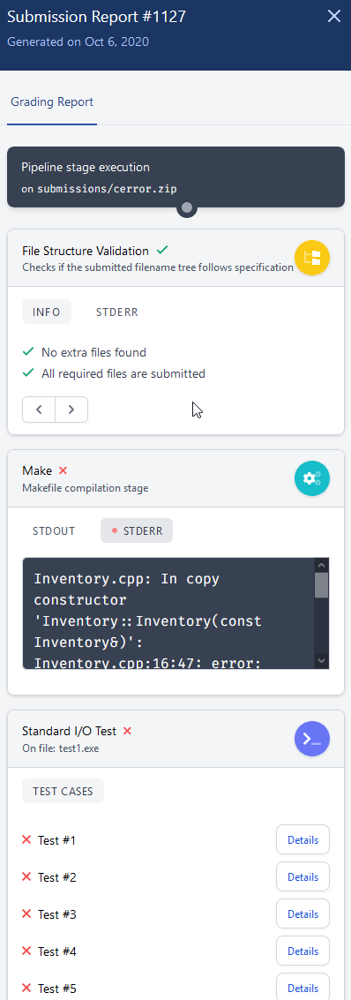
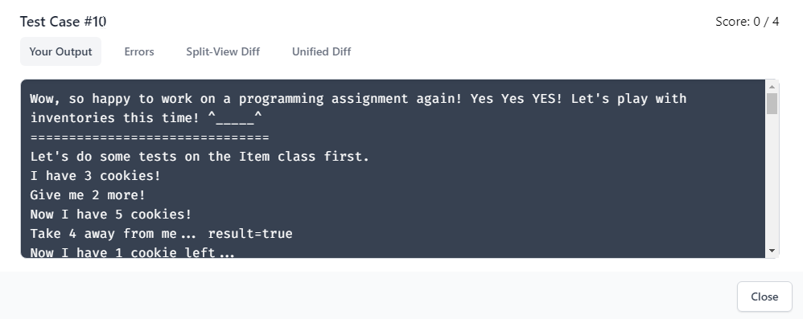

Login to https://zinc.cse.ust.hk using your ITSC account. After you logged in, you should find “COMP2012 Assignment 1 Inventory” on the left. Click on it.
Afterward, on the right, you should see “Upload a file or drag and drop”. You can
You need to zip the required files (i.e. Item.cpp and Inventory.cpp) ONLY. Do NOT zip a folder that contains the two files. It does not work. Also, the submission system only officially supports ZIP files. Other compression formats such as RAR, 7Z, etc. may NOT be accepted. To make a ZIP file,
After you have submitted your zip file, you should see the message: “You submitted on [date] at [time]”. We notice that some browser may have problem in showing the right date and time. Chrome works and Firefox doesn't. So we recommend you to use Chrome for submitting your PA.
After your submission, the system will compile your program and perform some simple checks. That is, after a few seconds to minutes, you should see the message “Auto Grader graded your submission on [date] at [time]”. Click “View Details” to check the report. (If it doesn't, please refresh the page to see the new message.)
You should see the Submission Details on the right.
Before the "Standard I/O Test", you will see some file structure validation and possibly warnings saying you have submitted the skeleton code by accident. If you got errors there, double-check/recreate your submission and try again.
For makefile projects, you will also see the make compilation result:
If it fails (i.e. you see a red cross beside Make), check the STDERR for the error logs as shown above. Fix the errors, save your updates, zip your updated files, and submit the zip file again.
If there is no compilation error reported, clicking the "Details" button next to each test case reveals the details for that test case:
The first tab is "Your output". You can also check the "Split-View Diff" and "Unified Diff" to see the difference of your output from the expected one. Try both to see which one is more informative to you.
About memory leak and other potential errorsSome test cases will also check for errors like memory leak using the -fsanitize=address,leak,undefined flags (related documentation here) of the latest g++ compiler on Linux (it won't work on Windows for the versions we have tested). Check the "Errors" tab for errors such as memory leak. Other errors/bugs such as out-of-bounds, use-after-free bugs, and some undefined-behavior-related bugs may also be detected. You will get 0 mark for the test case if there is any error there. Note that if your program has no errors detected by the sanitizers, then the "Errors" tab may not appear.